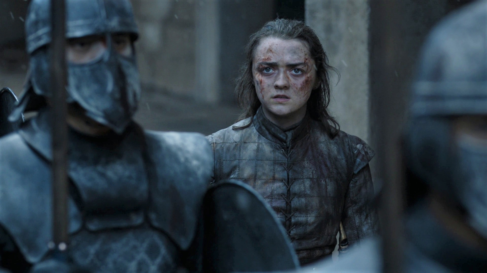

Game of Thrones Season 8 Alternate Endings Debunked by Maisie Williams
Posted on February 15, 2020 by Luka Nieto · 63 Comments
It’s been a rumor before the final season of Game of Thrones even began filming: “they’ll shoot alternate finale scenes so the real ending doesn’t leak!” There wasn’t much reason to believe this, but showrunner David Benioff added fuel to the flames by implying as much, and a few cast members said it outright–though, as it turns out, they were either misdirecting the press for fun or misinformed themselves. Whatever their reasons, if there were still any doubts, Maisie Williams is here to put them to rest.